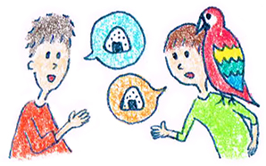

１３ : 傾聴トレーニング 基本のオウム返し
・傾聴力を高める練習 基本のオウム返し

前回まではコミュニケーションと関連が深い認行動療法の基礎を学んできました。今回からはいよいよ実践です！ 日常生活で使えるコミュニケーションスキルをたくさん学んでいきましょう。 当トレーニングを予習しておくと、講座の内容も吸収が早くなると思います。 講座に参加する前に是非一度読んでおいてください。
コミュニケーションスキルとしては大きく分けて、傾聴と発話の2種類があります。
私達は、コミュニケーションをする上では
話を聞いている ＝ 傾聴
自分が話している ＝ 発話
の2通りしかないのです。 突き詰めれば、コミュニケーションの問題を考えるときは傾聴と発話の2つの視点を重点的に考えていけば良いのです。
・傾聴と発話それぞれ6つのスキルを学ぼう
具体的には基礎とし傾聴は6つぐらいのスキル、発話は6つぐらいのスキルを練習すれば、かなり改善できると思います。
一つ一つのスキルをしっかりと取得すれば日常的な会話については普通にできるようになるでしょう。 頑張れば、聞き上手だね、話し上手だねと言われることを目指して一緒にがんばりましょう！！
・オウム返しなくして傾聴なし
まずは傾聴力を高める上で基本中の基本である、「オウム返し」から考えていきましょう。 オウム返しができるかどうかで、傾聴の30％ぐらいが決まってきてしまいます。 かなり重要なスキルなので是非マスターしてください。
オウム返しとは、まあそのままですが、相手のことばを繰り返すスキルです。
例えば、会話の相手が、 「昨日さあ～上司に怒られちゃってさ。。書類のミスが多いって・・・ 明日仕事いきたくねえよお」
とグチってきたとします。 このとき相手の言葉を繰り返すので
「いきたくねえのか・・・」
とそのまま返すのです。自分の主観を全く入れずに、そのまんま相手の言葉を繰り返すのですね。
相手の言葉をそのまま使った繰り返しのスキルは、何がいいのかと言うと、相手の気持ちとズレることが100％内と言うメリットがあります。
当たり前ですよね。自分が言ったことをそのまま、返してくれるわけないですから、「そうそう～そうなんだよ～」と言わざるを得ないのです。
相手
「昨日さあ～上司に怒られちゃってさ。。書類のミスが多いって・・・ 明日仕事いきたくねえよお」
自分
「いきたくねえのか・・・」
相手
「そうなんだよ～、もういやんなっちゃってさああ・・・」
という感じで続いていくことがとても多いです。
これが一番基本的なオウム返しの方法になります。
練習問題
それでは実際に練習してみましょう。 会話の相手が次のように発言しました。 それぞれオウム返しを考えてみてください。
例１
「私の出身は鳥取です。自然が豊かでいいところですよ。」
例２
「先日横浜に中華街に行ってきました。食べ放題で腹いっぱい食べましたよ。」
例3
「私は野球部出身です。ポジションはレフトでした。」
↓
回答
例１
「自然が豊かなんですね！」
例２
「おなかいっぱいになったんですね。」
例3
「レフトを守っていたのですね～」
とても簡単ですね笑
ばかばかしいスキルだと感じるかもしれませんが、実際に試してみてください。最初は不自然でも、自信を持って言えば結構効果がありますので。
講座でも何度も練習していきます。まずは文章の上でマスターできればOKです。 まずは傾聴力を伸ばす基本として、相手の言葉を繰り返すオウム返しを覚えておいてくださいね♪
 |
|